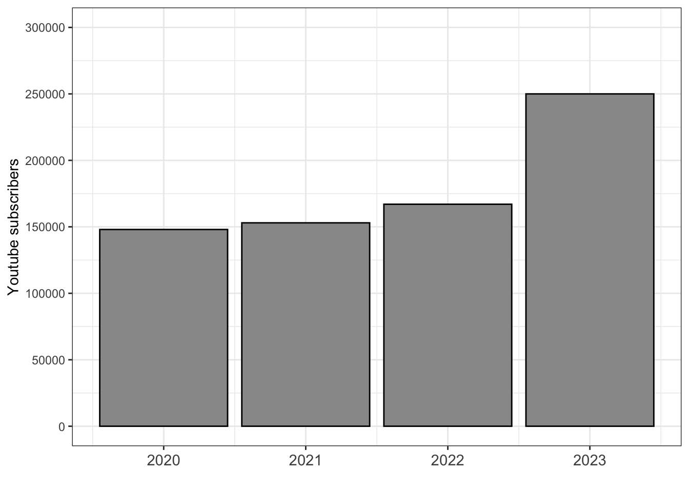
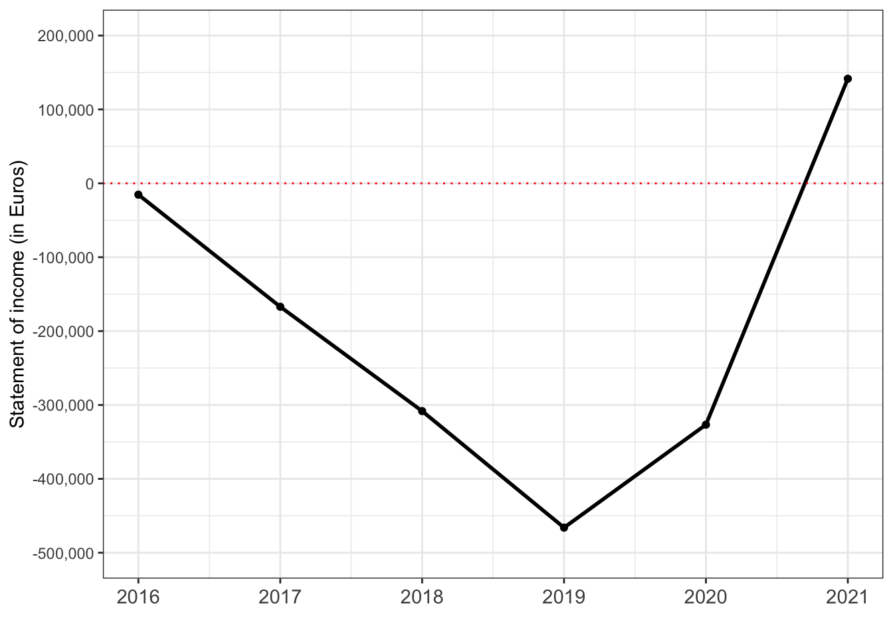

![]()

The following blog was written just after a ban order was announced by then-Federal Minister of the Interior Nancy Faeser. The ban was subsequently suspended (in August 2024) and finally overturned (in June 2025).
Germany’s Interior Minister, Nancy Faeser, announced on Tuesday (16 July) a ban order against Compact-Magazin GmbH, the limited liability company that publishes—well, I suppose that should be ‘published’—COMPACT Magazine. This is the third far-right1 organisation banned under Faeser’s leadership of the Interior Ministry, with both ‘Hammerskins Deutschland’ and ‘Artgemeinschaft - Germanische Glaubens-Gemeinschaft wesensgemaesser Lebensgestaltung e.V.’ banned in September 2023. Although banning Compact fits with the ongoing efforts of Faeser’s ministry to address far-right activity in Germany, this case is marked by unique features, most importantly: it is a company and publisher, not an association like most banning cases.
What is (was) Compact?
Compact-Magazin GmbH was a company founded in 2010 to manage the monthly publication of COMPACT-Magazin. It was the initiative of three men: Andreas Rieger, Kai Homilius, and Jürgen Elsässer. Rieger converted to Islam in the 1990s and, at the founding of Compact, was the publisher of Islamischen Zeitung (‘Islamic Newspaper’). He left the company in 2014, ruing the ‘racist and nationalist positions’ taken by the magazine. Homilius is a businessman mainly occupied with running 9 Leben (‘9 Lives’), a Magdeburg based shop selling vitamins and dietary supplements—but his role in the company was seemingly passive. The main managing director is Elsässer.
Jürgen Elsässer was not always the far-right ‘central network actor’ that he is described as in recent reports from Germany’s Verfassungsschutz (‘Constitutional Protection Office’). Throughout the 1990s and into the 2000s, he opposed the rise in nationalism following the reunification of Germany and espoused committed communist ideology, writing for left-wing extremist publications like konkret. A long march across the ideological spectrum transformed Elsässer into a major figure in Germany’s far-right scene where he is closely connected with the likes of Martin Sellner, the co-founder of Identitarian groups in Austria and Germany, and Björn Höcke, the figurehead of the extreme wing of the Alternative für Deutschland (AfD) party.
As Compact’s sole managing director since 2018, Elsässer has overseen a diversification of the company’s operations. An incorporated film company, CONSPECT FILM GmbH, was created to produce video content. Operating a Youtube channel, COMPACTTV, saw the company build to a quarter of a million subscribers (Figure 1), dwarfing the reported sales of 40,000 magazines per month. Added to magazine sales and online advertising revenues, the finances of Compact were buoyed up by merchandise sales in ‘Compact Shop’, regular donation drives, and regular cash infusions from a few wealthy businessmen, including Hans-Ulrich Kopp and Jörgen-Arne Fischer-van Diepenbrock. Until recently, these additional sources of income had been necessary since Compact’s annual financial reports show net losses until 2021 (Figure 2).2

Compact was placed under observation as a suspected extremist case (Verdachtsfall) in 2020 and then confirmed as extremist in 2021. This means that Germany’s security services have been able to surveil the company and all its operations for roughly the last three years. Minister Faeser’s ban order, as is typical, exercised the power granted to the government in the ‘Law on Associations’ (Vereinsgesetz), in which §3 enables a ban where an organisation’s
purposes or activities are contrary to criminal law or that it is directed against the constitutional order or the idea of international understanding; the order must order the dissolution of the association (ban).
Bans in Germany are usually applied to registered associations—not company’s like Compact. Accordingly, Faeser referred to §17 which further empowers the government to ban commercial organisations. While there have been many bans imposed in recent decades, bans against commercial entities is a rarity: only three other such organisations have been banned.3 German governments are hesitant to apply such bans because they entail not only a restriction on the freedom of association but also, since these groups operate as ‘news’ providers, on the freedom of the press. Thus, the ban against Compact is not unprecedented—but nevertheless bold.
Why ban? Why now?
Announcing the ban, Minister Faeser offered several justifications:
It is a central mouthpiece of the right-wing extremist scene. This magazine incites in an unspeakable way against Jews, against people with a migration background and against our parliamentary democracy. … In its wide-reaching publications and products, “COMPACT-Magazin GmbH” spreads anti-Semitic, racist, anti-minority, historical revisionist and conspiracy-theoretical content. It agitates against a pluralistic social system that respects the human dignity of the individual and the free and equal participation of all citizens in political decision-making. In its publications and online presence, “COMPACT-Magazin GmbH” propagates a nationalistic, ethnic concept of society that, in its view, seeks to exclude “ethnic foreigners” from the nation. The human dignity of those who do not fit into this ethnic concept is disregarded. … The content distributed by “COMPACT-Magazin GmbH” also aims to denigrate members of certain ethnic groups, particularly those of Arab descent, as second-class citizens. … “COMPACT-Magazin GmbH” also distributes anti-Semitic content. Conspiracy theories are spread, for example by an omnipotent Jewish financial elite, in order to stir up hatred against Jews.
These points are well-founded in the content produced by Compact and also echoed in statements by Elsässer himself. In an interview for the May 2018 edition of Compact, Elsässer said, ‘The task of the opposition media is to contribute to the overthrow of the regime’ (p. 29).4
Yet, as much as the agitation in editions of Compact, it may be the recent actions of Compact and Elsässer that helped spur on a ban order. Elsässer has cultivated close ties with other far-right actors. Besides Compact hosting a regular column by Martin Sellner, who was briefly banned from entering Germany due to his extremist campaigning, Elsässer is well connected to the AfD. Party members have written articles for Compact; they have shared the megaphone at far-right demonstrations; and he long employed (now) AfD politician Lars Günther as his personal assistant.
| Date | Region | City | Location | Size |
|---|---|---|---|---|
| 2024.03.30 | Brandenburg | Velten | Bahnhof (Pendlerparkplatz) | 600 |
| 2024.04.13 | Thüringen | Sonneberg | Bahnhofplatz | 700 |
| 2024.04.27 | Sachsen | Zittau | Marktplatz | 1000 |
| 2024.05.18 | Baden-Württemberg | Wertheim | Marktplatz | 450 |
| 2024.05.24 | Thüringen | Mühlhausen | Kleiner Blobach (Nähe Frauentor) | 130 |
| 2024.06.01 | Sachsen | Zwönitz | Markt | ? |
| 2024.06.09 | Sachsen-Anhalt | Magdeburg | Alter Markt | 250 |
| 2024.07.07 | Sachsen | Dresden | NA | 200 |
| 2024.07.27 | Sachsen-Anhalt | Stößen (bei Naumburg) | Rittergut Nöbeditz | cancelled due to ban of Compact |
| 2024.09.01 | Thüringen | Erfurt | NA | cancelled due to ban of Compact |
| 2024.09.22 | Brandenburg | Rathenow | NA | cancelled due to ban of Compact |
| 2024.11.02 | Sachsen-Anhalt | Stößen (bei Naumburg) | Rittergut Nöbeditz | cancelled due to ban of Compact |
The links to the AfD are longstanding, but this year Elsässer and Compact set out to campaign explicitly for the party in this ‘super election year’. Under the motto ‘The Blue Wave is rolling’ (‘blue’ referencing AfD’s party colour), Compact organised a series of demonstrations (Table 1) to support the AfD’s electioneering for the European Parliament and for regional parliaments in three eastern states. Spread across (mostly) mid-eastern Germany (Figure 3), these rallies skirted the boundary of being an illegal campaign contribution. The full motivation and complete rationale for bans on organisations in Germany is never clear, but the decision to ban Compact now, after several years of observation, may be due in part to its growing reach (Figure Figure 1) and ostentatious partisan advocacy for the AfD.
Quo vadis
Elsässer may still appeal the ban. In fact, given his famous litigiousness—he was mocked for his aggressive suits in a hit song by Danger Dan—an appeal is likely forthcoming. But the prospects for overturning the order seem remote.
Presuming that the ban against Compact stands, what does this mean for Germany’s far right? First, it disrupts the network of organisations and activists surrounding Compact. In morning raids of Elsässer’s home in Falkensee (Brandenburg) and in locations in Hessen, Sachsen and Sachsen-Anhalt, property was seized. Assets have been confiscated. And Compact’s array of online presences, its website, Youtube channel, social media accounts, have been disabled. Bans are costly and, at least for a time, somewhat debilitating for the far-right milieu.5
The ban also removes a staunch ally of the AfD ahead of regional elections in September. It is an interesting and open question of how much support, how many extra votes Compact could mobilise for the AfD, but the response of AfD politicians is clear. The AfD’s leader in Sachsen railed against the ban decision in a post, accusing Faeser of ‘trampling on both freedom of the press and freedom of expression’ and using the ban powers to conduct arbitrary raids.
The effects of banning Compact will unfold in the coming weeks and months. However, in any case, this decision seems to form part of the Faeser Ministry’s strategy to address forcefully extremist actors in Germany.
Footnotes
In banning Compact, Faeser declared it to be ‘right-wing extremist’.↩︎
Copies of these reports, for 2011 and 2016 to 2021 are accessible by going to the Bundesanzeiger (https://www.bundesanzeiger.de/pub/de/suche?6#) and searching for ‘Compact-Magazin GmbH’.↩︎
On 27 January 2016, another far-right media organisation, Altermedia, a neo-Nazi website, was banned; on 14 August 2017, the leftist online portal ‘linksunten’ was banned; and on 12 February 2019, the Mezopotamien Verlag und Vertrieb GmbH and the MIR Multimedia GmbH were declared to be part of the ‘Kurdish Workers’ Party’ (Arbeiterpartei Kurdistans, PKK), banned in 1993, and thus banned.↩︎
The interviewer for the article was Götz Kubitschek, another far-right publisher.↩︎
In a closely related case, the publisher Götz Kubitschek dissolved his Institut für Staatspolitik, which had been under observation by state security and reorganised operations under the Menschenpark Veranstaltungs UG und Metapolitik Verlags UG organisations. It does not preclude a ban—after all, the publications of these organisations, most notably Sezession, have much in common with Compact—but it is at least an obfuscating dodge that could delay one.↩︎